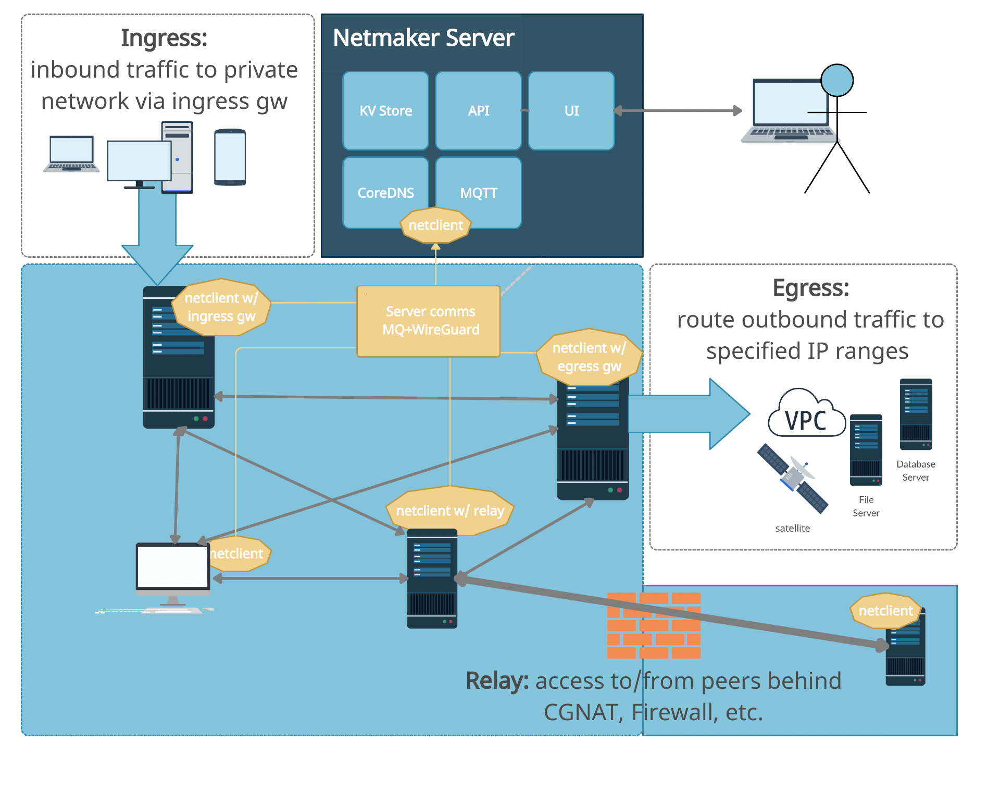
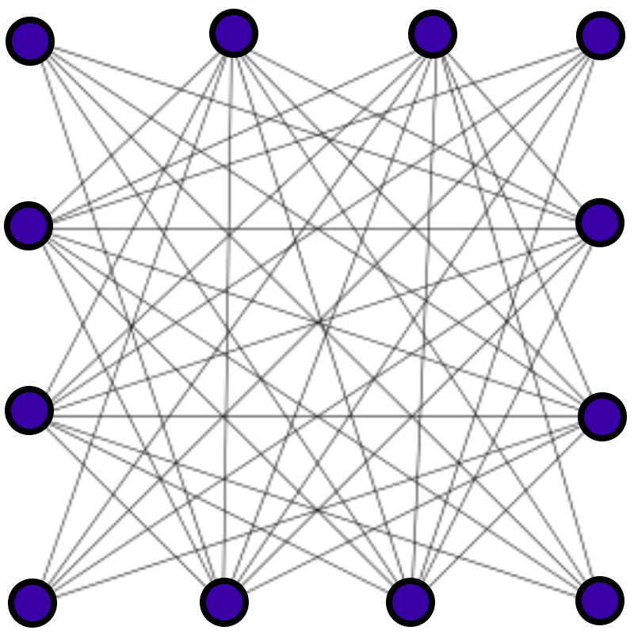

Architecture
{kind=link}
Pictured Above: A detailed diagram of Netmaker’s Architecture.
Core Concepts
Familiarity with several core concepts will help when you encounter them later in the documentation.
WireGuard
WireGuard is a relatively new but very important technology that was recently added to the Linux kernel. WireGuard creates very fast but simple encrypted tunnels between devices. From the WireGuard website, “it might be regarded as the most secure, easiest to use, and simplest VPN solution in the industry.”
Previous solutions like OpenVPN and IPSec are considerably more heavy and complex while being less performant. All existing VPN tunneling solutions will cause a significant increase in your network latency. WireGuard is the first to achieve near over-the-line network speeds, meaning you see no significant performance impact. With the release of WireGuard, there is little reason to use any other existing tunnel encryption technology.
Mesh Network
When we refer to a mesh network in these documents we are typically referring to a “full mesh.”
{kind=link}
A full mesh network exists where each machine is able to directly talk to every other machine on the network. For example, on your home network, behind your router, all the computers are likely given private addresses and can reach each other directly.
This is in contrast to a hub-and-spoke network, where each machine must first pass its traffic through a relay server before it can reach other machines.
In certain situations, you may either want or need a partial mesh network, where only some devices can reach each other directly, and other devices must route their traffic through a relay/gateway. Netmaker can use this model in some use cases where it makes sense. In the diagram at the top of this page, the setup is a partial mesh because the servers (nodes A-D) are meshed, but then Remote Access Clients come in via a gateway and are not meshed.
Mesh networks are generally faster than other topologies but are also more complicated to set up. WireGuard on its own gives you the means to create encrypted tunnels between devices, but it does not provide a method for setting up a full network. This is where Netmaker comes in.
Netmaker
Netmaker is a platform built off of WireGuard enabling users to create mesh networks between their devices. Netmaker can create both full and partial mesh networks depending on the use case.
When we refer to Netmaker in aggregate, we are typically referring to Netmaker and the netclient, as well as other supporting services such as CoreDNS, SQLite, Mosquitto (MQ Broker), and UI webserver. There is also almost always a proxy server / LB, which by default is Traefik, but could be any number of tools.
From an end user perspective, they typically interact with the Netmaker UI. The other components run in the background invisibly.
Netmaker does a lot of work to set configurations for you so that you don’t have to. This includes things like WireGuard ports, endpoints, public IPs, keys, and peers. Netmaker works to abstract away as much of the network management as possible, so that you can just click to create a network, and click to add a machine to a network. That said, every machine (node) is different, and may require special configuration. That is why, while Netmaker sets practical default settings, everything within Netmaker is fully configurable.
Node
A machine in a Netmaker network, which is managed by the Netclient, is referred to as a Node, as you will see in the UI. A Node can be a VM, a bare metal server, a desktop computer, an IoT device, or any other number of internet-connected machines on which the netclient is installed. A node is simply an endpoint in the network, which can send traffic to all the other nodes, and receive traffic from all of the other nodes.
Components
Netmaker consists of several core components, which are explained in high-level technical detail below.
Netmaker Server
The Netmaker server is, at its core, a golang binary. Source code can be found on GitHub. The binary, by itself, can be compiled for most systems. If you need to run the Netmaker server on a particular system, it likely can be made to work. In typical deployments, it is run as a Docker container. It can also be run as a systemd service as outlined in the non-docker install guide.
The Netmaker server acts as an API to the front end and publishes messages to clients via an MQ broker. The Netmaker server also runs an embedded “netclient” for each network that is created. This is a special netclient that enabled “UDP Hole Punching” on the system. When nodes reach the server, Netmaker uses this netclient to determine a routable address for each machine, and sends this out to the network.
Most server settings are configurable via a config file, or by environment variables (which take precedence). If the server finds neither of these, it sets sensible defaults, including things like the server’s reachable IP, ports, and which “modes” to run in.
The Netmaker server interacts with either SQLite (default), postgres, or rqlite, a distributed version of SQLite, as its database. This DB holds information about nodes, networks, users, and other important data. This data is configuration data.
When the netmaker server needs to send an update to nodes, it publishes a message to the broker, MQ.
The components of the server are usually proxied via Traefik or an alternative like Nginx or Caddy. The proxy handles SSL certificates to secure traffic, and routes to the UI and API.
Message Broker (Mosquitto)
The Mosquitto broker is the default MQTT broker that ships with Netmaker, though technically, any MQTT broker should work so long as the correct configuration is applied. The broker enables the establishment of a pub-sub messaging system, whereby clients subscribe to receive updates. When the server receives a change, it will publish that change to the broker that pushes out the change to the appropriate nodes.
The broker must be reachable over a public address.
Netclient
The netclient is, at its core, a golang binary. Source code can be found in the Netclient GitHub Repository. The binary, by itself, can be compiled for most systems. However, this binary is designed to manage a certain number of Operating Systems.
The netclient can be installed in one of two way: using package manager for your os/DE or by downloading the binary for your operating system/architecture from the netclient github repository and running ./netclient install.
After installation netclient commands can be executed to ‘join’ or ‘register’ with the netmaker server.
The ‘join’ and ‘register’ command attempts to add the machine to the Netmaker network using sensible defaults, which can be overridden with a config file or environment variables. Assuming the netclient has a valid key (or the network allows manual node signup), it will be registered into the Netmaker network, and will be returned necessary configuration details for how to set up its local network.
The netclient automatically registers with the MQTT server running with Netmaker, which will send it periodic updates when the network changes.
The netclient then sets up the system daemon (if running in daemon mode), and configures WireGuard. At this point, it should be part of the network.
The netclient will detect local changes and send them to the server when necessary. A change to IP address or port will lead to a network update to keep everything in sync. If the node is not running with the in daemon on, it is up to the operator to keep the netclient up-to-date by running regular “pulls” (netclient pull).
The MQ pub-sub system allows Netmaker to create dynamic mesh networks. As nodes are added to, removed from, and modified on the network, other nodes are notified and make appropriate changes.
Database (SQLite, rqlite, postgres)
Netmaker uses embedded SQLite as the default database. It can also use PostgreSQL, or rqlite, a distributed (RAFT consensus) database. Netmaker interacts with the database to store and retrieve information about nodes, networks, and users.
Additional database support (besides SQLite and rqlite) is very easy to implement for special use cases. Netmaker uses simple key-value lookups to run the networks, and the database was designed to be extensible, so support for key-value stores and other SQL-based databases can be achieved by changing a single file.
Netmaker UI
The Netmaker UI is a ReactJS-based static website which can be run on top of standard webservers such as Apache and Nginx. Source code can be found here. In a typical configuration, the Netmaker UI is run on Nginx as a Docker container.
Netmaker can be used in its entirety without the UI, but the UI makes things a lot easier for most users. It has a sensible flow and layout for managing Networks, Nodes, Access Keys, and DNS.
CoreDNS
As of 0.22.0, CoreDNS is an active part of the Netmaker system. We deprecated setting entries on the hosts file which was not an ideal implementation. Netmaker server actively sets the dns entries on the CoreDNS server. After you install the netmaker server components, you can see the corendns container running as well. You need to make some changes manually to activate the corendns server, follow these steps on the netmaker server:
Make sure that UDP Port 53 and TCP Port 53 are allowed to pass in the network where your netmaker server lies
disable the systemd-resolved (Reason: to avoid port conflict with coredns server)
sudo systemctl disable systemd-resolved.service
sudo systemctl stop systemd-resolved
Make sure the network_mode: host is set on the coredns container spec in /root/docker-compose.yml and run docker-compose up -d
And now you can point any machine in the network to use this DNS server and you can reach the other peers in the network by their domain names.
For external clients running linux, make sure ‘resolvconf’ is installed before setting the Wireguard configurations.
Refer to your operating system documentation for information about how to configure custom DNS network settings. Here are some general help guides on how to add custom DNS server:
Linux - https://devilbox.readthedocs.io/en/latest/howto/dns/add-custom-dns-server-on-linux.html. Configuration depends on what distribution of Linux you use.
Mac - https://devilbox.readthedocs.io/en/latest/howto/dns/add-custom-dns-server-on-mac.html
Windows - https://devilbox.readthedocs.io/en/latest/howto/dns/add-custom-dns-server-on-win.html
If your machine is virtually hosted in a cloud, you might want to refer to your VM provider’s documention on how to permanently set the custom DNS resolver.
Caddy
As of 0.17.0, Caddy is the default proxy for Netmaker if you set it up via Quick Start. Caddy is a simple and docker-friendly proxy, which can be compared to Nginx, Traefik, or HAProxy.
Caddy simplifies management because the configuration file is very short, several lines compared to dozens of lines for Traefik or Nginx. In addition, it can request certificates automatically.
Traefik was previously the default and is still a functioning option, but We are moving guidance towards Caddy by default. If you are maintaining an installation that relies on Traefik, you can continue to use it with Netmaker.
Remote Access Clients
The Remote Access Clients (client external to the mesh network) is simply a configured WireGuard connection to your network, which Netmaker helps to manage.
Most machines can run WireGuard. Setting up a WireGuard connection to a single endpoint is fairly simple. It is setting up mesh networks and other topologies like site-to-site which becomes complicated.
Mac, Windows, and Linux are handled natively by the Netclient, though you can still add them as ext clients if you wish. Primarily, iPhone and Android are the main systems unsupported by the Netclient which MUST be handled via Remote Access Client.
Remote Access Clients hook into a Netmaker network via an “Remote Access Gateway (ingress),” which is configured for a given node and allows traffic to flow into the network. Remote Access Clients are also reachable via the gateway. While this is a “concentrator” and not peer-to-peer, this is often desirable.
Many users use Remote Access Clients clients as a convenient way to manage remote access for their users. Why? It works with vanilla WireGuard for one. You simply download the config and load it into WireGuard on the client device. No additional software is required. It can also be quite helpful to have a “choke point” for traffic (the gateway) rather than direct p2p connections to every machine.
Technical Process
Below is a high level, step-by-step overview of the flow of communications within Netmaker (assuming Netmaker has already been installed):
Admin creates a new network with a subnet, for instance, 10.10.10.0/24
Admin creates a registration key for signing up new nodes
Both of the above requests are routed to the server via an API call from the front end
Admin installs the netclient binary on any given node (machine) and runs netclient join or register command.
Netclient decodes key, which contains the server location
Netclient gathers and sets appropriate information to configure itself as a node: it generates key pairs, gets public and local addresses, and sets a port.
Netclient sends this information to the server, authenticating with its registration key
Netmaker server verifies information and creates the node, setting default values for any missing information, and returns a response.
Netmaker also registers the client with MQ.
Upon successful registration, Netclient pulls the latest peers list from the server and set up a WireGuard interface.
Netclient subscribes to the MQ broker.
Netclient configures itself as a daemon (if joining for the first time).
Netclient regularly retrieves local information, checking for changes in things like IP and keys. If there is a change, it pushes them to the server.
If a change occurs in any other peer or peers are added/removed, an update will be sent to the Netclient via MQ, and it will re-configure WireGuard.
Compatible Systems for Netclient
To manage a node manually, the netclient can be compiled and run for most Linux distibutions, with a prerequisite of WireGuard with kernel headers. If the netclient from the release pages does not run natively on your system, you may need to compile the netclient binary directly on the machine from the source code. This may be true for some installations of SUSE, Fedora, and some Debian-based systems. However, if the dependencies are installed on the machine, the netclient should run correctly after being compiled.
Simply clone the repo, cd to netmaker/netclient, and run “go build” (Golang must be installed).
- The following systems should be operable natively with Netclient in daemon mode:
Windows
Mac
FreeBSD
OpenWRT
Fedora
Ubuntu
Debian
Mint
SUSE
RHEL
Raspian
Arch
CentOS
Fedora CoreOS
Systemd is a system service manager for a wide array of Linux operating systems, but not all Linux distributions have adopted systemd. If you need to run on a Linux distro without systemd, we recommend the following: Join “unmanaged” with netclient join -daemon=off on Linux systems that do not run systemd and use some other method to run the daemon like a cron job or custom script.
Limitations
Install limitations mostly include platform-specific dependencies. A failed netclient install should display information about which command is failing, or which libraries are missing. This can often be solved via machine upgrade, installing missing dependencies, or setting kernel headers on the machine for WireGuard (e.x.: Installing Kernel Headers on Debian)
It is very helpful if an install fails to run “netclient join -t <token> -v 4”. By default, the install runs with minimal logging. The -v flags will display any encountered errors. You can set the verbosity fron 0-4.